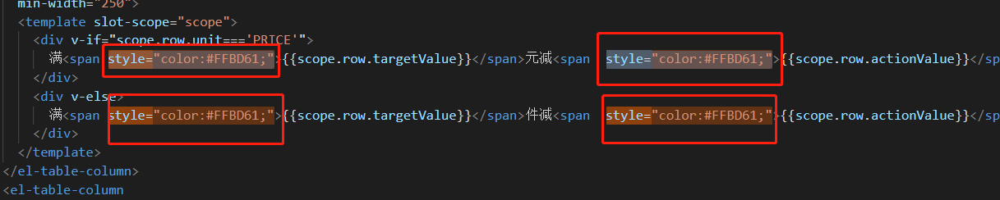

CSS代码重构的基本方法——提高CSS性能的手段
前面说到了CSS代码重构的目的，现在我们来说说一些如何达到这些目的的一些基本方法，这些方法都是易于理解，容易实施的一些手段，大家平时可能也不知不觉地在使用它。
首先说说如何提高CSS性能，根据页面的加载性能和CSS代码性能，主要总结有下面几点：
1、尽量将样式写在单独的css文件里面，在head元素中引用
有时候为了图方便或者快速搞定功能，我们可能会直接将样式写在页面的style标签或者直接内联在元素上，这样虽然简单方便，但是非常不利于日后的维护。
将代码写成单独的css文件有几点好处：
（1）内容和样式分离，易于管理和维护
（2）减少页面体积
（3）css文件可以被缓存、重用，维护成本降低
结合A网项目


2、不使用@import
这条手段已经是众所周知，这里简单提一下，@import影响css文件的加载速度
3、避免使用复杂的选择器，层级越少越好
有时候项目的模块越来越多，功能越来越复杂，我们写的CSS选择器会内套多层，越来越复杂。
建议选择器的嵌套最好不要超过三层，比如：
.header .logo .text{}
可以优化成
.haeder .logo-text{}
简洁的选择器不仅可以减少css文件大小，提高页面的加载性能，浏览器解析时也会更加高效，也会提高开发人员的开发效率，降低了维护成本。
结合A网项目
4、精简页面的样式文件，去掉不用的样式
很多时候，我们会把所有的样式文件合并成一个文件，但是这样有一个问题：很多其他页面的CSS同时引用到当前页面中，而当前页面并没有用到它们，这种情况会造成两个问题：
（1）样式文件偏大，影响加载速度
（2）浏览器会进行多余的样式匹配，影响渲染时间。
正确的处理方法是根据当前页面需要的css去合并那些当前页面用到的CSS文件。
PS：合并成一个文件有一个优点：样式文件会被浏览器缓存，进入到其他页面样式文件不用再去下载。这条规则应根据场景来区别对待，如果是大项目，应该合并成不同的样式文件，如果是简单的项目，建议合并成一个文件即可。如果无法确认项目规模，建议分开成不同的样式文件，日后要合并也比较方便。
5、利用CSS继承减少代码量
我们知道有一部分CSS代码是可以继承的，如果父元素已经设置了该样式，子元素就不需要去设置该样式，这个也是提高性能的行之有效的方法。
常见的可以继承的属性比如：
color，font-size，font-family等等
不可继承的比如：
position，display，float等
6、CSS样式分离之再分离——建立基础文件库
“CSS样式分离之再分离”表型上的两个特点为“分离”和“命名”，掌握与理解其深层次思想的关键是思维方式的转变，这包括“CSS库概念”意识。举个例子吧，依照现在主流的写法，下截图所示的灰色背景的框框命名与样式可能如下：
.topic_edit_box{display:inline-block; border:1px solid #ddd; background:#f7f7f7; padding:20px 40px;}{}
如果您有强烈的分离意识，尤其在大型的项目中，这段样式可能会是这个样子（注意命名）：
.dib{display:inline-block;}
.bdd border:1px solid #ddd;}
.bgf7{background:#f7f7f7;}
.p20_40{padding:20px 40px;}{}
字面上很容易理解，就是把这段样式分离成一个一个单独的样式。当然，这只是表象，要想让样式再分离发挥其最大的功效，对其精髓思想有着较为深入的理解是很必须的，否则，您可能会用的很痛苦，或是滥用而产生其他一些问题。
结合A网项目